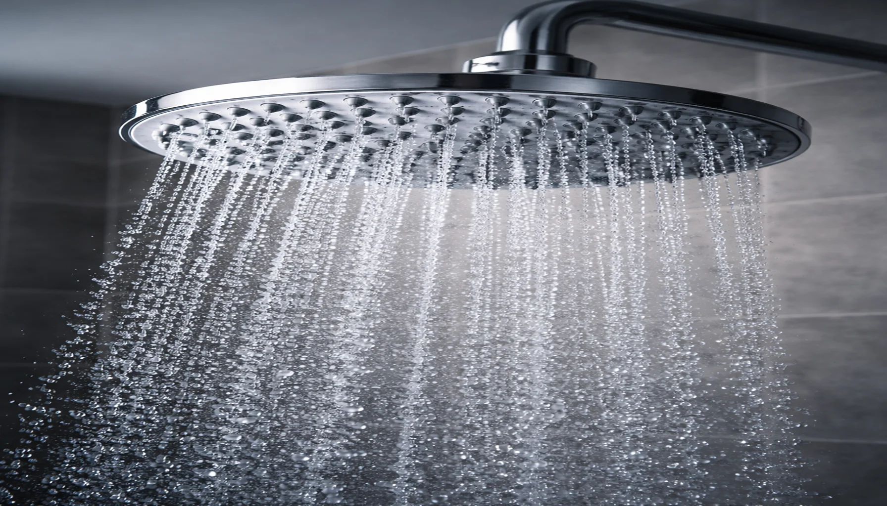

Shower Head Flow Rate & GPM Guide: Everything You Need to Know (2026)

Bathroom Fixtures Expert
Helping you understand shower head performance, one GPM at a time.
Quick Answer: What GPM Should You Choose?
For most households, 2.0 GPM is the sweet spot. It delivers a comfortable shower while saving roughly 20% on water compared to the 2.5 GPM federal maximum. If water conservation is your priority, choose a WaterSense-certified model at 1.5–2.0 GPM — you'll save $70–$100/year on water and energy bills without sacrificing pressure, thanks to modern air-injection technology.

Introduction: Why Flow Rate Matters More Than You Think
When most people shop for a new shower head, they focus on spray patterns, finish color, and price. But there's one specification that affects your daily experience more than any other: flow rate, measured in GPM (gallons per minute).
Flow rate determines how much water comes out of your shower head every minute. It directly impacts the strength of your spray, how quickly you can rinse shampoo from your hair, how much water you use, and — ultimately — how much you pay on your water and energy bills each month.
The difference between a 2.5 GPM and a 1.5 GPM shower head might not sound dramatic, but over the course of a year, it adds up to thousands of gallons of water and $70–$100 in savings. And thanks to advances in shower head engineering, lower flow rates no longer mean a weak, unsatisfying shower.
Whether you're choosing a new shower head, trying to reduce your utility bills, or just curious about what the numbers on the box actually mean, this guide covers everything you need to know about GPM, flow rates, and water efficiency in 2026.
1. What Is GPM? Definition & Federal Regulations
GPM stands for Gallons Per Minute — it measures the volume of water that flows through your shower head each minute when fully open. It's the single most important number for understanding your shower's water consumption and performance.
How GPM Is Measured
Manufacturers measure GPM under standardized conditions: water flowing at 80 PSI (pounds per square inch) of pressure, which represents typical municipal water pressure. This standardized measurement lets you compare shower heads fairly. In your home, actual flow may differ based on your water pressure — more on that in Section 7.
Key concept: GPM measures volume (how much water), not pressure (how hard it hits). A 2.0 GPM shower head with well-designed nozzles can feel more powerful than a 2.5 GPM model with a basic spray plate. The engineering of the shower head matters just as much as the raw flow rate.
Federal Regulations: The 2.5 GPM Standard
In 1992, the Energy Policy Act (EPAct) set the federal maximum flow rate for shower heads at 2.5 GPM at 80 PSI. This law applies to all shower heads manufactured or sold in the United States. Before this regulation, many shower heads flowed at 5.0 GPM or more — that's double the current legal maximum.
The regulation has had a massive impact. The EPA estimates it has saved trillions of gallons of water nationally since it took effect. But 2.5 GPM is the federal ceiling. Several states have gone further:
| State | Maximum GPM | Effective Date |
|---|---|---|
| Federal Standard | 2.5 GPM | 1994 |
| California | 1.8 GPM | July 2018 |
| Colorado | 2.0 GPM | 2020 |
| New York | 2.0 GPM | 2019 |
| Hawaii | 1.8 GPM | 2024 |
| Washington | 2.0 GPM | 2021 |
Important: If you live in California or Hawaii, any shower head you install must be rated at 1.8 GPM or less. In Colorado, New York, and Washington, the limit is 2.0 GPM. Check your local building codes before purchasing, especially for new construction or renovations.
2. Standard Flow Rates by Shower Head Type
Different types of shower heads operate at different flow rates, depending on their design and intended use. Here's what you can expect from each category:
| Shower Head Type | Typical GPM Range | Best For |
|---|---|---|
| Rainfall | 2.0 – 2.5 GPM | Spa-like experience, wide coverage |
| Handheld | 1.5 – 2.5 GPM | Flexibility, rinsing, accessibility |
| Low-Flow / Eco | 1.5 – 2.0 GPM | Water conservation, lower bills |
| High-Pressure | 2.0 – 2.5 GPM | Strong spray, thick hair rinsing |
| Filtered | 1.8 – 2.5 GPM | Water quality improvement |
| Dual / Combo | 2.0 – 2.5 GPM (combined) | Versatility, two spray zones |
Rainfall Shower Heads: 2.0 – 2.5 GPM
Rainfall shower heads use large face plates (8–12 inches) to disperse water over a wider area. Because the spray is spread thin, they typically need at least 2.0 GPM to provide adequate coverage. At 1.5 GPM, a rainfall head often feels like a light drizzle rather than rain. If you want the best rainfall shower head experience, aim for 2.0 GPM or higher and ensure your home has at least 40 PSI of water pressure.
Handheld Shower Heads: 1.5 – 2.5 GPM
Handhelds are the most versatile category and come in the widest GPM range. Because you hold them closer to your body, even a 1.5 GPM handheld can feel powerful. The flexible hose makes them excellent for targeted rinsing, cleaning the shower, and accessibility for seated bathing. See our handheld vs fixed comparison for a detailed breakdown.
Low-Flow / Eco Shower Heads: 1.5 – 2.0 GPM
Designed specifically for water conservation, low-flow models use engineering tricks to maximize the feeling of water pressure while minimizing actual water volume. The best models are essentially indistinguishable from standard 2.5 GPM heads thanks to:
- Air-injection technology: Mixes air into the water stream, creating larger, fuller-feeling droplets
- Pressure-compensating valves: Maintain consistent flow regardless of incoming pressure
- Optimized nozzle design: Smaller, precisely angled holes concentrate the spray
- Turbine-driven rotation: Spins water through a chamber to increase perceived force
High-Pressure Shower Heads: 2.0 – 2.5 GPM
High-pressure models prioritize spray force above all else. They concentrate water through fewer, smaller nozzles to deliver a powerful, focused stream. Even at 2.0 GPM, a well-designed high-pressure head can outperform a basic 2.5 GPM model. Check our high-pressure shower heads guide for top-tested picks.
3. How to Measure Your Current Flow Rate
Before you decide whether to upgrade your shower head, you should know what you're currently working with. The bucket test is a simple, accurate method anyone can do at home in under two minutes.
The Bucket Test: Step by Step
Get a 1-gallon bucket or container. A standard milk jug or large measuring pitcher works perfectly. Mark the 1-gallon line if it isn't already marked.
Turn on your shower at full blast. Use the setting you normally shower with. Let it run for 10 seconds to stabilize the flow before starting.
Place the bucket under the shower head and start a timer. Use your phone's stopwatch. Time exactly how many seconds it takes to fill to the 1-gallon mark.
Calculate your GPM. Divide 60 by the number of seconds. That's your flow rate in gallons per minute.
Quick GPM Reference
| Time to Fill 1 Gallon | Your GPM | Assessment |
|---|---|---|
| 15 seconds | 4.0 GPM | Very high — pre-1992 head, likely wasteful |
| 24 seconds | 2.5 GPM | Federal maximum — standard flow |
| 30 seconds | 2.0 GPM | Efficient — WaterSense threshold |
| 40 seconds | 1.5 GPM | Low-flow — excellent conservation |
| 60 seconds | 1.0 GPM | Very low — possible pressure issue |
Pro tip: Run the test 2–3 times and average the results for accuracy. Flow can vary slightly depending on time of day (peak usage hours in your neighborhood can reduce municipal water pressure temporarily).
If your test reveals a flow rate above 2.5 GPM, your shower head predates the 1992 federal regulation. Replacing it with a modern 2.0 GPM model would save you significant money — see the cost calculator below. If your flow rate is below 1.0 GPM and the shower feels weak, the issue is likely your water pressure, not the shower head — jump to Section 7.
4. Low Flow vs High Flow: Pros & Cons
The debate between low-flow and high-flow shower heads often comes down to a perceived trade-off: save water or enjoy a powerful shower. But modern technology has blurred this line considerably. Here's an honest comparison:
Low-Flow Shower Heads (1.5 – 2.0 GPM)
Advantages
- Save 20–40% on water usage
- Lower energy bills (less water to heat)
- Environmentally responsible
- Required by law in some states
- Modern designs maintain perceived pressure
- Extends hot water heater capacity
Disadvantages
- May feel weaker in homes with low water pressure
- Not ideal for large rainfall heads
- Rinsing thick/long hair takes slightly longer
- Cheap models sacrifice pressure for savings
High-Flow Shower Heads (2.0 – 2.5 GPM)
Advantages
- Maximum spray intensity and coverage
- Better rinsing for thick or long hair
- Optimal for rainfall and body spray systems
- More forgiving with low water pressure
- Wider range of available models
Disadvantages
- Higher water and energy bills
- Not legal for new installations in some states
- Depletes hot water tank faster
- Greater environmental footprint
Our take: For most people in 2026, a quality 2.0 GPM shower head is the best balance. You get meaningful water savings without compromising shower quality. The only scenario where we'd push for 2.5 GPM is if you have genuinely low water pressure (under 30 PSI) or you're using a large 10"+ rainfall head. See our best shower heads roundup for tested models at every flow rate.
5. WaterSense Certification Explained
WaterSense is an EPA-sponsored voluntary program that labels water-efficient products meeting specific performance criteria. Think of it as the "Energy Star" equivalent for water fixtures. Since its launch in 2006, WaterSense has helped Americans save over 7.3 trillion gallons of water.
WaterSense Requirements for Shower Heads
To earn the WaterSense label, a shower head must meet two critical requirements:
- Flow rate of 2.0 GPM or less (at 80 PSI) — at least 20% below the federal 2.5 GPM maximum
- Pass spray force and coverage tests — ensuring the lower flow rate doesn't result in a weak, unsatisfying shower
This second requirement is what separates WaterSense from simply buying any cheap low-flow head. The EPA tests ensure that WaterSense-certified shower heads deliver a satisfying shower experience at the lower flow rate. The spray must hit with adequate force and cover a minimum area — no "drizzle" heads allowed.
The Real-World Savings
WaterSense Shower Head: Average Annual Savings
- Water saved: ~2,700 gallons per year (per household)
- Energy saved: ~330 kWh per year (from heating less water)
- Money saved: $70+ per year (water + energy combined)
- CO2 reduced: ~370 lbs per year
Source: EPA WaterSense program data, based on average U.S. household water costs and 8-minute average shower duration.
How to Identify WaterSense Products
Look for the blue WaterSense label on the packaging or product listing. On Amazon and retail sites, WaterSense-certified shower heads will display the EPA WaterSense logo. You can also search the EPA's WaterSense product database for certified models by brand and model number.
Rebate alert: Many water utilities offer $5–$25 rebates for installing WaterSense-certified shower heads. Check with your local water provider — the shower head may end up being free after the rebate.
6. Water & Energy Cost Calculator
Let's break down exactly how much money different flow rates cost you per year. These calculations assume an 8-minute average shower, 1 shower per day per person, and a 2-person household (the U.S. average). Water is priced at $0.006/gallon and electricity at $0.16/kWh for water heating.
Annual Cost Comparison by GPM
| Flow Rate | Gallons/Year | Water Cost | Energy Cost | Total Cost |
|---|---|---|---|---|
| 3.5 GPM (pre-1992) | 40,880 | $245 | $327 | $572 |
| 2.5 GPM (federal max) | 29,200 | $175 | $234 | $409 |
| 2.0 GPM (WaterSense) | 23,360 | $140 | $187 | $327 |
| 1.5 GPM (ultra low-flow) | 17,520 | $105 | $140 | $245 |
Switching from 2.5 GPM to 1.5 GPM saves approximately $164/year.
These numbers are conservative estimates. Households with more than 2 people, longer showers, or higher local water rates will see even greater savings. A family of four taking 10-minute showers could save $200+ per year by switching from 2.5 to 1.5 GPM.
The payback math: A quality WaterSense shower head costs $15–$40. At $82/year in savings for a 2-person household, the shower head pays for itself in 2–6 months. It's one of the easiest home upgrades with a positive ROI.
Keep in mind that these savings come from two sources: the water itself and the energy to heat it. In fact, the energy savings are often larger than the water savings, since heating water accounts for about 17% of the average home's energy use (the second-largest energy expense after heating/cooling).
7. How Water Pressure Affects Flow Rate
One of the most common misconceptions is confusing water pressure (PSI) with water flow rate (GPM). They're related but different, and understanding the distinction is key to choosing the right shower head.
PSI vs GPM: What's the Difference?
- PSI (Pounds per Square Inch) = the force of the water in your pipes. Think of it as how hard the water pushes.
- GPM (Gallons per Minute) = the volume of water delivered. Think of it as how much water flows.
A garden hose analogy: PSI is how hard you squeeze the nozzle (force). GPM is how much water comes out total (volume). You can have high pressure with low volume (tight nozzle) or low pressure with high volume (wide-open hose).
Typical Residential Water Pressure
| PSI Range | Classification | Shower Experience |
|---|---|---|
| Below 20 PSI | Very Low | Weak dribble — likely a plumbing issue |
| 20–40 PSI | Low | Noticeable weakness; choose a high-pressure head |
| 40–60 PSI | Normal | Comfortable with any standard shower head |
| 60–80 PSI | Good | Strong flow; ideal for rainfall heads |
| Above 80 PSI | High | May need a pressure regulator to protect plumbing |
How Low Pressure Impacts GPM
A shower head rated at 2.5 GPM is measured at 80 PSI. If your home's water pressure is only 40 PSI, that same shower head might deliver only 1.5–1.8 GPM in practice. This is why some people buy a "2.5 GPM" head and still feel like their shower is weak — the problem isn't the shower head, it's the incoming pressure.
Solutions for Low Water Pressure
If the bucket test shows your flow rate is significantly below your shower head's rating, here are practical solutions:
- Check for clogs: Mineral buildup in the shower head restricts flow. Clean your shower head with vinegar to restore full flow.
- Remove the flow restrictor: Most modern shower heads include a small plastic disc or washer that limits flow. Removing it can increase GPM by 0.5–1.0 (note: this may exceed legal limits in some states).
- Choose a high-pressure design: High-pressure shower heads concentrate water through smaller nozzles, maximizing perceived force even at low PSI.
- Install a shower pump: For homes with consistently low pressure (well water, upper floors), a shower booster pump ($80–$200) increases PSI at the shower valve.
- Check your pressure regulator: Many homes have a main pressure regulator near the water meter. It may be set too low or failing.
- Inspect shut-off valves: A partially closed valve anywhere in the line reduces pressure. Ensure all valves are fully open.
Warning: If your water pressure exceeds 80 PSI, install a pressure-reducing valve. High pressure can damage fixtures, cause leaks, and waste water. Most home insurance policies don't cover water damage from unregulated high pressure.
8. Frequently Asked Questions
What is a good GPM for a shower head?
For most households, 2.0 GPM is the optimal balance between water savings and shower quality. It meets WaterSense standards, saves about 20% over the federal 2.5 GPM maximum, and works well with normal water pressure (40–80 PSI). If you have low pressure, 2.5 GPM gives more room to work with. If conservation is your priority, 1.5 GPM with air-injection technology can still deliver a satisfying shower.
What is the legal maximum GPM for a shower head in the US?
The federal maximum is 2.5 GPM at 80 PSI, established by the Energy Policy Act of 1992. However, California and Hawaii cap it at 1.8 GPM, and Colorado, New York, and Washington cap it at 2.0 GPM. Always check your state and local regulations before buying, especially for new construction projects.
Does lower GPM mean lower water pressure?
Not necessarily. GPM measures volume, while pressure (PSI) measures force. Modern low-flow shower heads use technologies like air-injection, pressure-compensating valves, and optimized nozzle geometry to maintain strong perceived pressure at 1.5–2.0 GPM. A well-engineered 2.0 GPM head often feels more powerful than a basic 2.5 GPM model.
How do I measure my shower head's GPM at home?
Use the bucket test: place a 1-gallon container under your shower, turn on full, and time how long it takes to fill. Divide 60 by the seconds to get GPM. Example: 30 seconds to fill 1 gallon = 60 ÷ 30 = 2.0 GPM. Run the test 2–3 times for accuracy, as municipal pressure can fluctuate.
What is WaterSense certification for shower heads?
WaterSense is an EPA program certifying shower heads at 2.0 GPM or less that still meet spray force and coverage performance standards. WaterSense-certified models save the average household about 2,700 gallons per year and $70+ on utility bills. Many local water utilities offer rebates of $5–$25 for installing WaterSense products.
How much money can I save by switching to a low-flow shower head?
A 2-person household switching from 2.5 GPM to 1.5 GPM can save approximately $100–$164 per year on combined water and energy bills. Even a modest switch from 2.5 to 2.0 GPM saves around $82/year. A $20 low-flow shower head typically pays for itself in under 3 months, making it one of the highest-ROI home upgrades available.
Verdict: Recommended GPM by Use Case
After testing dozens of shower heads at every flow rate, here are our GPM recommendations by situation:
Best for most people: 2.0 GPM — The ideal balance. Meaningful water savings, no noticeable drop in shower quality with a quality shower head. WaterSense-certified, legal everywhere, and saves ~$82/year versus 2.5 GPM.
Best for eco-conscious households: 1.5 GPM — Maximum water savings ($164+/year) with modern air-injection designs that still feel powerful. Perfect for shorter showers and handheld use. Required in California for new installations.
Best for low water pressure homes: 2.5 GPM — If your home's PSI is below 40, you need every bit of flow you can get. Pair with a high-pressure shower head design for the best results.
Best for rainfall shower heads: 2.0–2.5 GPM — Large-face rainfall heads need adequate volume for full coverage. Don't go below 2.0 GPM for heads 8 inches and larger.
Best for families (4+ people): 1.5–2.0 GPM — More people = more showers = more savings. A family of four saves $200+/year at 1.5 GPM versus 2.5 GPM, and your hot water tank will thank you too.
Best for hard water areas: 2.0 GPM + filter — Pair a moderate flow rate with a filtered shower head to reduce mineral buildup. Filters slightly reduce flow, so starting at 2.0 GPM ensures adequate pressure after filtration.
No matter which GPM you choose, the most important factor is getting a quality shower head with good nozzle engineering. A well-designed 1.5 GPM head will outperform a cheap 2.5 GPM model every time. Check our complete shower head buying guide for detailed recommendations at every price point, or browse our best shower heads of 2026 for our top-tested picks across all categories.